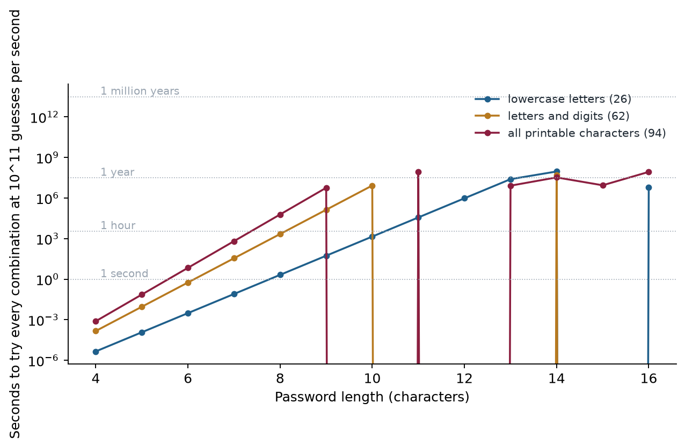

Chapter 9: Password Attacks¶
Passwords remain the most commonly attacked authentication mechanism. The attacks range from brute force, which tries everything, to credential phishing, which needs no cracking at all because the victim simply types the password into the wrong page. This chapter covers six attacks, shows the arithmetic that makes brute force practical against short passwords, and explains why salting, multi-factor authentication and passkeys defeat so many of them.
Layman analogy
If a password is the key to a lock: brute force is trying every possible key in a massive ring of millions of keys; a dictionary attack is trying the most commonly cut keys first; credential stuffing is using a copy of someone else's key; and credential phishing is tricking you into handing the attacker your own key directly.
9.1 Brute Force Attack¶
Systematically try every possible combination of characters until the correct password is found. Given enough time and computing power, brute force can crack any password.
Layman analogy
Trying every possible combination on a padlock — 0000, 0001, 0002... all the way to 9999. On a 4-digit lock this takes up to 10,000 attempts. On an 8-character password with letters, numbers, and symbols, it takes trillions.
The mathematics:
- 8-character lowercase password: 26⁸ = 208 billion combinations
- Modern GPUs: ~100 billion hash calculations per second
- Result: an 8-character all-lowercase password is cracked in approximately 2 seconds
- 12-character mixed password: would take thousands of years at the same rate
Defence tip
Use long passwords (15+ characters). Enable account lockout policies and rate limiting. Enable MFA.
9.2 Dictionary Attack¶
Instead of trying every possible combination, try a pre-compiled list of common words, phrases, number sequences, and known passwords from previous breaches.
Key fact: The RockYou.txt wordlist — compiled from a 2009 data breach — contains 14 million real passwords people actually use. Research shows 80%+ of users have a password that appears somewhere in common wordlists.
Layman analogy
Instead of trying every combination on a combination lock, an attacker who knows that most people use "1234," "0000," or their birth year tries those first. This is dramatically faster and more effective than exhaustive search.
Defence tip
Never use real dictionary words, names, or dates. Use a passphrase: "Tr@in$RainFall!2024" or a random password manager-generated string.
9.3 Rainbow Table Attack¶
Websites store passwords as cryptographic hashes (a one-way mathematical transformation) — not the plain text. When attackers steal a password database, they get hashes and need to reverse them. A rainbow table is a pre-computed database of hash→password mappings, allowing instant lookup.
- Rainbow table for 8-character alphanumeric MD5 passwords: ~460 GB storage
- Lookup time: milliseconds (vs. hours or days for live brute force)
Layman analogy
Instead of solving a maths problem every time you need the answer, you pre-compute and store every possible answer in a giant lookup table. Finding the answer becomes trivial — just look it up.
Defence tip
Password SALTING: Before hashing, add a unique random string ("salt") to each password. Even if two users have the same password, their hashes will be completely different. This makes pre-computed rainbow tables entirely useless.
9.4 Credential Stuffing¶
Use username/password pairs stolen from one breached service to attempt login on completely different services, exploiting the widespread habit of password reuse.
Why it works: Studies consistently show that 65% of people reuse the same password across multiple accounts.
Scale: leaked-credential collections such as the "Compilation of Many Breaches" (COMB) hold billions of username and password pairs harvested from many breaches over many years.
Example 9.4: Credential Stuffing
The 2018 MyFitnessPal breach exposed about 150 million accounts. Wherever users had reused the same email address and password on other services, the leaked pair could be tried against those accounts, which is exactly how credential stuffing works.
Defence tip
Use a unique, strong password for EVERY service. A password manager (Bitwarden, 1Password, Dashlane) makes this practical. Enable MFA everywhere.
9.5 Password Spraying¶
The inverse of brute force. Instead of trying MANY passwords against ONE account (which triggers lockouts), try ONE or a very few common passwords against THOUSANDS of accounts. Stays under lockout thresholds while compromising accounts at scale.
Example: Try the single password "Summer2024!" against 10,000 accounts. With a 3-5% success rate (typical for common passwords), the attacker compromises 300-500 accounts without triggering any individual account lockout.
Defence tip
MFA eliminates the value of spraying even when passwords are correctly guessed. Implement anomaly detection for distributed authentication attempts.
9.6 Credential Phishing¶
Trick users into voluntarily typing their real credentials into a fake login page. No cracking required — the attacker simply receives whatever the victim types.
- Modlishka — real-time reverse proxy that shows the actual legitimate website to the victim but intercepts all input, including MFA tokens, relaying them in real time
- Gophish — open-source phishing campaign platform
Defence tip
FIDO2 / Passkeys: Phishing-resistant by design. Authentication is cryptographically bound to the specific domain — a fake site can never trigger the authenticator, even if the victim is fooled.
9.7 Brute force in numbers¶

Example 9.7: how long does a brute-force search take?
The number of passwords of length \(n\) over an alphabet of size \(s\) is \(s^n\).
- 8 lowercase letters: \(26^8=208{,}827{,}064{,}576\approx2.1\times10^{11}\). At \(10^{11}\) guesses per second this takes about 2 seconds.
- 12 characters from the 94 printable characters: \(94^{12}\approx4.8\times10^{23}\). At the same rate this takes about \(4.8\times10^{12}\) seconds, roughly 150,000 years.
Adding four characters and widening the alphabet multiplied the work by a factor of about \(2\times10^{12}\). Length is the cheapest defence, and the reason the chapter advises passwords of 15 or more characters. The rate itself is the figure quoted in the course material for modern GPUs against fast hashes; slow, salted password hashes reduce it dramatically, which is why how a service stores passwords matters as much as what users choose.
9.8 Tools and defences at a glance¶
The tools below are named in the security literature and are also used by defenders to test their own systems.
| Attack | Tools seen in the literature | Typical defence |
|---|---|---|
| Brute force | Hashcat, John the Ripper, Hydra | Long passwords, lockout policies, rate limiting |
| Dictionary | Hashcat with wordlists, CrackStation, CUPP | Avoid real words; use passphrases |
| Rainbow table | RainbowCrack | Salting |
| Credential stuffing | Sentry MBA, OpenBullet, custom scripts | A unique password per site, MFA |
| Password spraying | Ruler (Exchange), Spray, MSOLSpray (Azure) | MFA, anomaly detection, conditional access |
| Credential phishing | Gophish, Modlishka | FIDO2 passkeys |
9.9 Defence tips¶
- Use a password manager — generate and store a unique, random password for every service
- Enable MFA on every account, especially email (which controls account recovery for everything else) and banking
- Check your exposure at HaveIBeenPwned.com — if your email appears, change that password everywhere
- Consider Passkeys (FIDO2) — they fundamentally cannot be phished or credential-stuffed
- Organisations: implement password spray detection, anomaly alerts, and conditional access policies
9.10 Summary¶
- Brute force tries every combination; dictionary attacks try likely passwords; rainbow tables look up precomputed hashes; credential stuffing reuses leaked pairs; spraying tries few passwords on many accounts; credential phishing needs no cracking.
- Length beats complexity: an 8-character lowercase password falls in about 2 seconds at \(10^{11}\) guesses per second.
- Salting defeats rainbow tables; a unique password per site and MFA defeat stuffing and spraying; passkeys (FIDO2) defeat phishing.
- Use a password manager and check exposure at Have I Been Pwned.
9.11 Exercises¶
-
Compute the number of 8-character lowercase passwords and how long it takes to try them all at \(10^{11}\) guesses per second.
Answer
\(26^8=208{,}827{,}064{,}576\approx2.1\times10^{11}\). At \(10^{11}\) guesses per second, that is about 2.1 seconds.
-
How does password spraying differ from brute force, and why does it avoid lockouts?
Answer
Brute force tries many passwords against one account, which triggers lockout. Spraying tries one or a few very common passwords against thousands of accounts, so no single account sees enough failures to lock. A 3 to 5 percent success rate on 10,000 accounts yields 300 to 500 compromised accounts.
-
Why does salting make rainbow tables useless? What if two users have the same password?
Answer
A rainbow table is precomputed for passwords without salt. With a unique random salt added before hashing, the attacker would need a separate table for every possible salt. Two users with the same password get different hashes.
-
Why are FIDO2 passkeys phishing-resistant, even if the user is fooled by a fake login page?
Answer
The credential is cryptographically bound to the genuine domain. A fake site has a different domain, so the authenticator will not respond to it, and no password or reusable secret is ever typed or transmitted.
-
List three defences against credential stuffing.
Answer
A unique password for every service (practical with a password manager), multi-factor authentication, and checking whether your email appears in known breaches (for example Have I Been Pwned) and changing any reused password. Organisations can also detect anomalous login attempts.